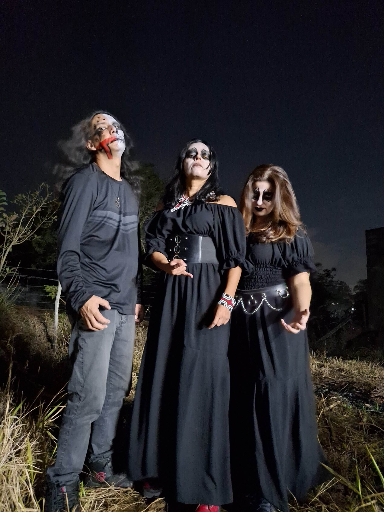
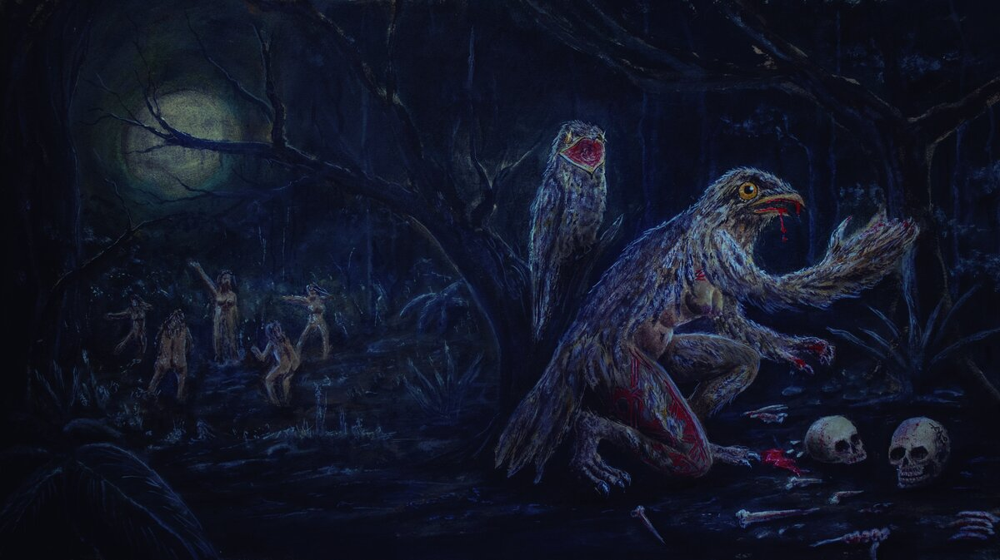

Ürütaü — banda de doom metal de São Paulo
Doom Metal · São Paulo
Origen
Ürütaü nació en 2024 en la escena underground de São Paulo, encuadrando el folclore brasileño, la cosmología tupí-guaraní y las leyendas urbanas en forma de relatos de terror y poesía.
Fundada por Ale Galliard y Lari Death, el dúo ganó su tercer integrante — y su nombre — cuando J. L. Índio se incorporó a la batería.
El urutau es presagio de muerte, lamento, misterio y conexión con el mundo espiritual — un ave tan enigmática que existen decenas de versiones de leyendas sobre ella. Son esa ambigüedad y ese misticismo oscuro los que guían el concepto de la banda: riffs pesados y lentos, voces limpias, letras enteramente en portugués, y un interés declarado en devolverle al folclore nacional el peso y la seriedad que la cultura pop casi siempre reserva a las mitologías extranjeras.
Influenciada por Candlemass, Black Sabbath, Death, Metallica, Pink Floyd y Type O Negative, entre otras, Ürütaü ya ha compartido escenario con grandes nombres del underground, como Clenched Fist, Mortem Crucis, Mávra, Kvlto, Mortem Aetaten, Red Sun Lord, Satanatos y Arcano de Valak — y ha sido entrevistada por medios como Na Lâmina da Foice, Idea Creator Cast, Rock Doido do Argoth y Ethnos Rock.

Ürütaü — doom metal de São Paulo
Transmutação

EP debut · 7 temas · portada de Thiago Boller
Grabado y producido por Sander Iguchi en Sounder Studio (Ferraz de Vasconcelos–SP), el EP combina riffs de doom metal con instrumentos autóctonos elaborados principalmente por el pueblo Kuikuro. El CD fue lanzado por Impaled Records y cuenta con la participación especial de Vagner Fist de Clenched Fist.
Canto da Morte
Conciertos
Conciertos anteriores
Reservas y prensa
Para conciertos, entrevistas o colaboraciones, contáctanos: